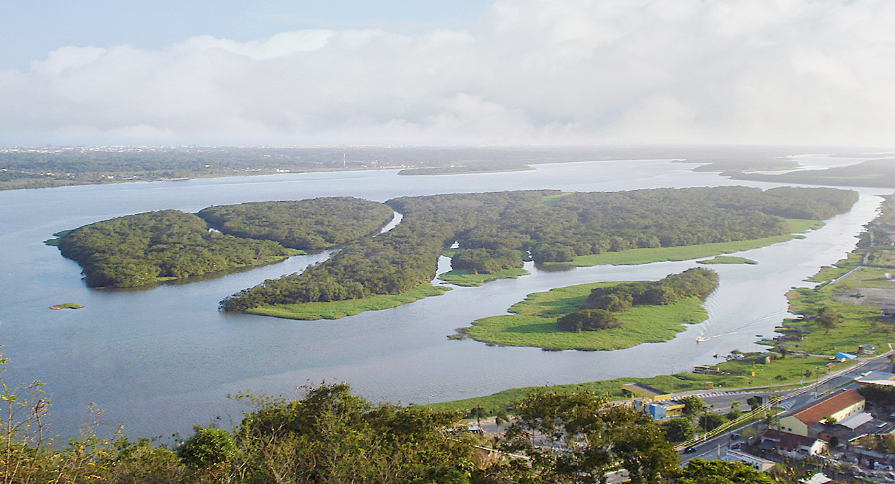

Nosso catálogo:
Esperamos que você encontre algo que seja do seu gosto!
Tudo
Canindé de São Francisco
Sergipe
Belos vales, monumentos e muita história por trás de tudo
Conceição de Ibitipoca
Minas GeraisUm local muito bonito com belas areas naturais, que querendo ou não atrairam muitos pesquisadores estrangeiros
Conde
ParaíbaEsse lugar carrega bastante história e também apresenta diversos pontos turísticos
Garanhuns
PernambucoLocal que participou do ciclo do café e da bovicultura, sendo que a partir da década de 60 se tornou um foco econômico
Iguape
São Paulo Local com lindas praias e edificios que foram construidos na época colonial, carregando muita história
Nobres
Mato GrossoUm local com diversas belezas naturais, a cidade tem sítios arqueológicos com pinturas rupestres e outros
Pancas
Espirito SantoLocal com o foco em tradições, mantendo os aspectos culturais de seus ancestrais pomeranos, italianos e mestiços
Pirenopolis
GoiásUm lugar com uma história desda da época dos bandeirantes, com algumas cachoeiras e "spots" com belas vistas
São Francisco do Sul
Santa Catarina
Local muito bonito com uma boa história por trás de suas praias, museu local e seus arredores